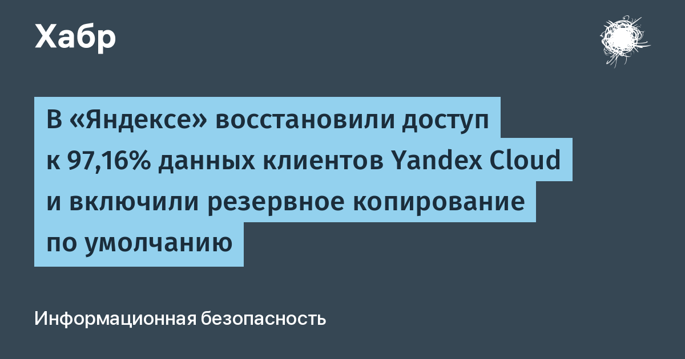

«Яндекс» сообщил, что инженеры после атак на дата-центры вернули доступ к 97,16% клиентских данных в Yandex Cloud. Оставшиеся 2,84% восстановить невозможно: оборудование получило критические повреждения, а у самих клиентов не было резервных копий на платформе. У тех, кто бэкапы всё-таки настроил, потерь нет вообще — сохранены все 100% данных. Для сравнения: 23 октября компания говорила о 90,47% — за две недели восстановили ещё почти семь процентов.
Главный практический вывод из аварии: Yandex Cloud меняет подход к резервному копированию. Если раньше его нужно было включать вручную — и большинство, судя по цифрам потерь, не включало, — то теперь при создании новых виртуальных машин бэкап включён сразу. От него по-прежнему можно отказаться, услуга доступна на прежних условиях, но дефолт теперь «с защитой». Инженеры продолжают разносить вычислительные ресурсы по новым независимым локациям в разных регионах РФ, и их число будет расти.
Суперкомпьютеры «Ляпунов», «Галушкин» и «Червоненкис» в атаках не пострадали — их вывезли из прежних локаций и разворачивают самостоятельными кластерами на новых площадках; на них снова будут обучать фундаментальные языковые модели. «Яндекс 360» тоже восстанавливают поэтапно: почта, «Телемост», «Документы» и «Календарь» работают штатно, а часть возможностей «Диска» компания намеренно ограничила, чтобы удержать инфраструктуру под нагрузкой. Минцифры подтверждало, что помогло «Яндексу» найти дополнительные площадки для переноса ключевых систем.
Если у вас в Yandex Cloud есть критичные данные: проверьте, включено ли резервное копирование на старых виртуальных машинах (дефолт спасает только новые), настройте экспортируемые снимки за пределы одного региона и не забывайте, что восстановление «из облака» не отменяет правила «копия в другом месте». Директор по стратегическому маркетингу «Яндекса» Андрей Себрант признавал, что нынешний сбой оказался серьёзнее сценария потери одного дата-центра, который компания отрабатывала на учениях, — и это лучший аргумент в пользу того, что один ЦОД, каким бы надёжным он ни казался, не является стратегией.